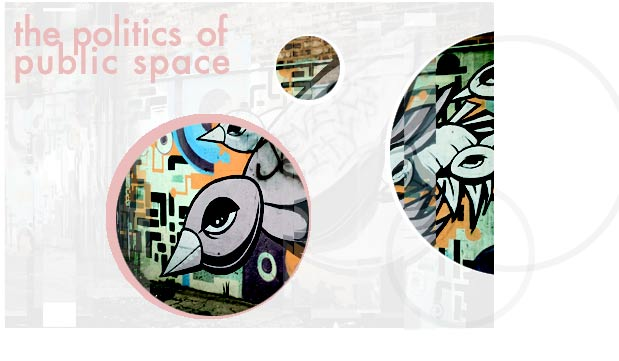

The other day I was in the car looking for a Chinese restaurant on Western Avenue that is actually, it turns out, located on Lincoln Avenue. I had driven up and down Western, around the block six or seven times, before I decided that I needed to let someone else drive so that I could look out the window and watch for signs. That's when I spied Kent Jockington, my imaginary boyfriend, on the corner waiting for a bus, so I motioned for him to get in and drive. By virtue of being imaginary, Kent Jockington appears whenever I need an extra body around, but once you get those imaginary boyfriends talking, they're so opinionated. But he is a really good driver, so I felt safe taking my eyes of the road to scour the landscape for my restaurant sign.
Looking for a sign on a busy street is like reading a book. An under-punctuated book. It is, in fact, like reading Finnegans Wake before you've had your morning coffee. If you are looking for a sign that says “Chinese Restaurant, ” you will invariably first need to work through No Turn on Red Can you Hear Me Now Verizon Wireless NO PARKING Monday Special two dollars Pabst Blue Ribbon bottles You CALL it shots Checks Cashed, Money Orders Processed WHILE YOU WAIT , so looking for something specific, even on the right street, takes a bit of close reading.
Public space is overrun with text. It's nothing new to negotiate. We expect to be barraged with information and solicitation walking around the city. When you see a billboard or a marquee, it's vying for your attention. It wants you to buy a car, a cell-phone plan, a starving third-world child's education, a movie ticket. You buy it; you don't buy it. You expect the confrontation. So when you see a marquee that says ABUSE OF POWER COMES AS NO SURPRISE should you be walking in New York City in the mid-1980s, it may take a moment to process the fact that Jenny Holtzer is playing off your expectations, and not actually trying to sell you abuse, power, or surprise. In an urban landscape saturated with advertisements, contemporary public art that plays off our expectations gives the public a chance to bring their experience to it, approach it not as Art with a capital “A”, but rather as we would approach anything else on the streets.
Chicago is a celebrated city of public art, but often it's public art that doesn't involve the public. It's a closed circuit. On the other hand, you take something like the infamous summer of 1999 exhibition, “Cows on Parade”, and you get the whole metropolitan area and most of the Midwest to interact with, climb all over, and photograph plasticine painted animals. Of course, all proposals for painted cows had to first be approved by the city board, so the chances of any of the animals actually commenting on the relevance of the cow in Chicago history were slim. There were no cows displayed with missing heads or limbs. There were no cows painted with the marks of slaughter on their skulls. There were no cows quartered into slabs of beef on the sidewalk. No one wants to see that. But everyone is hungry for a hamburger after walking in the heat of the Magnificient Mile all day, and anyone who can find Chicago on a map can tell you the reason the city came to be a booming metropolis has everything to do with the meat-packing industry.
It's provocative when public art challenges the system of control implicit in the information-packed urban landscape by asking questions about who gets to put information where, and who does not. Chicago, as almost any other major city, has had a long-standing relationship with its graffiti art, as Mayor Richard Daley's Graffiti Busters could tell you. That little white van rides around the city and white-washes what it can by day, while adolescent boys sit in school dreaming up new designs for Chicago walls that will be done by night. Graffiti conveniently does not require funding or city sanctioned approval, and therefore can say and display whatever it likes. The display, in many cases, seems to outweigh the say, as even your most prolific graffiti writer will risk getting arrested just to tag as little text as his name, onto the side of a building. You don't usually get any train-length narratives. You get one charged act and the evidence in the morning. Money buys public space, space in which any advertisement can be construed and contained. Graffiti does not react so much with a literal message, as it does with the act of hijacking a space for it's own devices.
| go to page 2 |